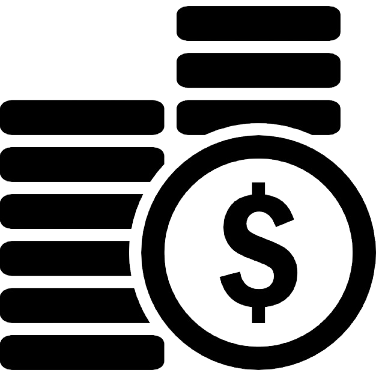
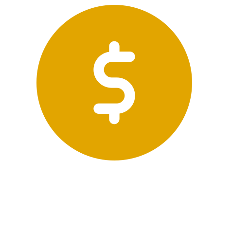

สมาชิก
ราคาทอง
เกี่ยวกับโปรเจค
หน้าหลัก
Gold Price Analysis
ราคาทองหน่วยดอลลาร์สหรัฐตั้งเเต่ ค.ศ.1950 จนถึงปัจจุบัน
โปรเจคเราเกี่ยวกับอะไร ?
พวกเราได้จัดทำโปรเจค Gold Price Analysis ขึ้นมา เพื่อวิเคราะห์ข้อมูลในเรื่องของราคาทอง ว่ามีมูลค่าขึ้นลงเท่าไหร่
ตั้งแต่ปี ค.ศ. 1950 จนถึงปัจจุบันโดยเราจะวิเคราะห์ข้อมูลของทุกปีว่าราคาทองนั้นมีมูลค่าต่างกันเท่าไหร่จากปีที่ผ่านๆมา
โดยจะแสดงผลออกมาเป็นข้อมูลราคาทองแต่ละปี ในรูปแบบกราฟ

Price : เงินในสกุลดอลล่าสหรัฐ (USD)
Years : มูลค่าทองตั้งเเต่ปี ค.ศ. 1950 - ปัจจุบัน
6 ปัจจัยที่กระทบราคาทองคำ

Demand & Supply
(อุปสงค์ & อุปทาน)
สำหรับข้อแรกนั้นเป็นเรื่องพื้นฐานที่สุดสำหรับสินค้าทุกชนิดบนโลกใบนี้ก็คือเรื่องของ Demand Supply นั่นเอง เอาง่ายๆก็คือถ้าหาก ทองคำนั้นหามาได้ง่าย+มีจำนวนมากเหมือนพลาสติก ราคาของทองคำนั้นก็จะต่ำ หรือ หากทองคำนั้นมีคนอยากซื้อมากราคาทองคำก็จะสูงขึ้นตามหลัก Demand Supply ที่ใช้ได้กับสินค้าทุกชนิดบนโลก
Economic Data
(ข้อมูลทางเศรษฐกิจ)
สำหรับประเด็นที่ 2 คือเรื่องของตัวเลขเศรษฐกิจต่างๆ คือถ้าหากเศรษฐกิจของโลกนี้ดูดี นักลงทุนก็จะไม่ค่อยสนใจทองคำมากนักเพราะนำเงินไปลงทุนในตลาดหุ้น น่าจะได้รับผลตอบแทน ที่สูงกว่า ดังนั้นราคาทองคำก็จะตกลง ในทางกลับกันถ้าเศรษฐกิจของโลกหรือแนวโน้มเศรษฐกิจของโลกดูไม่ดี ราคาทองคำก็มีแนวโน้มที่คนจะสนใจมาลงทุนเพิ่มขึ้น
Monetary Policy
(นโยบายการเงิน)
ข้อที่ 3 ก็คือเรื่องของนโยบายการเงินของธนาคารต่างๆ ทั่วโลก โดยเฉพาะประเทศใหญ่ๆ อย่าง USA เพราะเงินนั้นไหลจากที่ผลตอบแทนต่ำ ไปยังที่ผลตอบแทนสูงเสมอ ดังนั้นหากอัตราดอกเบี้ยเพิ่มสูงขึ้นก็มีแนวโน้มว่าคนจะนำเงินไปลงทุนในพวกพันธบัตรหรือเงินฝากต่างๆเพิ่มขึ้น ซึ่งก็จะส่งผลกระทบต่อราคาทองคำในทางลบนั้นเอง เพราะคนก็อาจจะขายทองคำแล้วนำเงินไปฝากเพิ่มขึ้น
US Dollar movement
(การเปลี่ยนเเปลง
ของค่าเงินดอลลาร์)
ทองคำนั้นซื้อขายกันด้วย $ เป็นหลักดังนั้นถ้า US Dollar ด้อยค่าลง (อ่อนค่า) ราคาทองคำก็จะเพิ่มสูงขึ้นเอง

Inflation
(เงินเฟ้อ)
ข้อที่ 5 คือเรื่องของ Inflation หรือเงินเฟ้อ เงินเฟ้อที่เพิ่มขึ้นจะทำให้ราคาสินค้าต่างๆ ในโลกนี้เพิ่มขึ้น เช่นเดียวกับทองคำ ยกตัวอย่างให้เห็นภาพง่ายๆก็คือ ราคาก๋วยเตี๋ยวข้างบ้านเมื่อ 10 ปีเท่าไรแล้วราคาตอนนี้เท่าไร ??

Uncertainty
(ความไม่แน่นอน)
มาถึงข้อสุดท้ายที่ส่งผลกระทบต่อราคาทองคำ นั่นก็คือเรื่องของ Uncertainty หรือความไม่แน่นอนของโลกใบนี้นั้นเอง เพราะว่าทองคำนั้นถือเป็น safe heaven หรือ สินทรัพย์ปลอดภัยของโลกใบนี้ ดังนั้นหากเกิดความไม่แน่นอนเช่น เกิดการก่อการร้าย หรือ เกิดวิกฤตทางการเงิน การเมือง ราคาทองคำก็จะสูงขึ้นนั้นเอง
จากกราฟพบว่า มูลค่าทองคำในช่วงปี ค.ศ.1950 - 1970 นั้น ไม่มีความเปลี่ยนมาก มีมูลค่าอยูในช่วง 35-37 ดอลลาร์สหรัฐ เเละต่อมาในช่วงปี ค.ศ. 1974 ถึง 1996 มูลค่าทองคำนั้นสูงขึ้นสูงสุด อยู่ที่ 596 ดอลลาร์สหรัฐ จนปี ค.ศ. 2012 มูลค่าทองคำนั้นขึ้นสูงสุดในรอบ 50 ปี มีมูลค่าสูงถึง 1,687 ดอลลาร์สหรัฐ
Members
61070105
นายนิธาน ทรัพย์แก้วยอด
61070108
นางสาวบุญญิสา เลียวสิริไพโรจน์
61070140
นายพันธวีร์ คงสวัสดิ์
61070246
นายสุชานนท์ วิโรจน์รัตน์
Gold Price Analysis Created by ; ฝนตก Sleepy
ขอบคุณข้อมูลจาก datahub.io